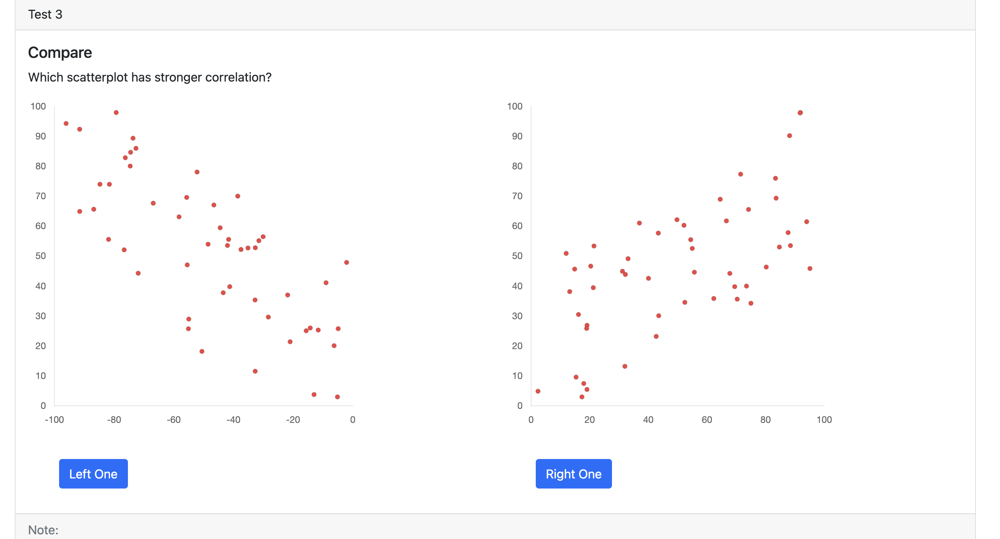

Correlation in a scatterplot refers to the relationship between two variables, usually represented as x and y. In a scatterplot, the x-axis and y-axis represent the two variables, and the dots or points on the plot show the relationship between them. The correlation in a scatterplot can be either positive, negative, or zero.
Overall, the correlation in a scatterplot helps to visualize the relationship between two variables and identify patterns and trends.
Positive correlation means that as the value of x increases, the value of y also increases. In other words, there is a direct relationship between the two variables. Positive correlation is shown in a scatterplot by a pattern that moves upward from left to right.
Negative correlation means that as the value of x increases, the value of y decreases. In other words, there is an inverse relationship between the two variables. Negative correlation is shown in a scatterplot by a pattern that moves downward from left to right.
Zero correlation means that there is no relationship between the two variables. This is shown in a scatterplot by a pattern that is random and does not show any clear upward or downward trend.
The strength of the correlation is measured using the Pearson correlation coefficient, which ranges from -1 to 1.
A value of -1 indicates a perfect negative correlation, a value of 1 indicates a perfect positive correlation, and a value of 0 indicates no correlation. The closer the correlation coefficient is to either -1 or 1, the stronger the correlation is.
Participants are expected to examine the scatterplots and identify the scatterplot that has stronger correlation.
The scatterplots contain multiple points that are scattered.
Here is the example:

Try it Now